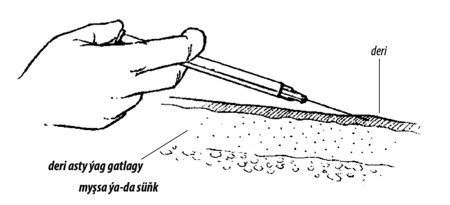
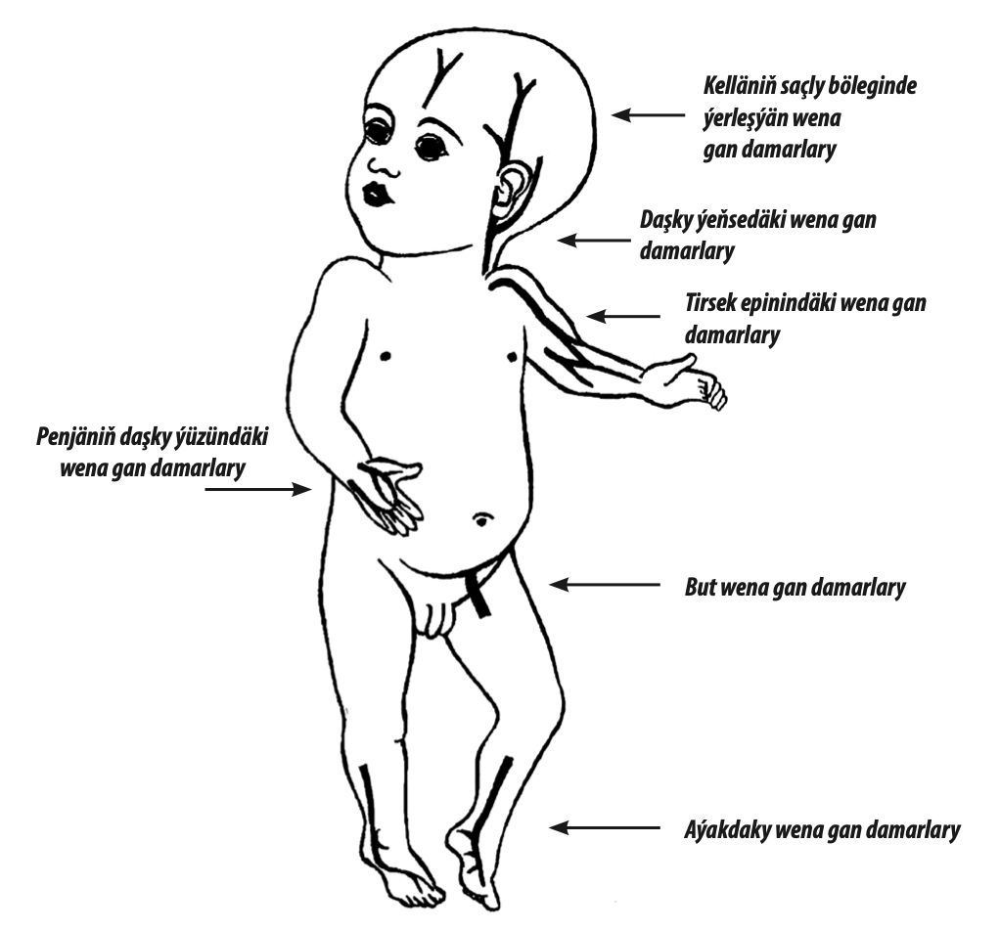

Ilki bilen çagada öň sanjymlar geçirilende allergiki reaksiýalarynyň bolanlygyna ýa-da bolmanlygyna göz ýetiriň. Elleriňizi sabyn bilen ýuwuň. Bir sapar ulanylýan iňňeleri we şprisleri ulanyň.
Em ediljek ýeri antiseptik serişdesi bilen arassalaň. Üns bilen derman serişdäniň möçberine serediň we şprise gerek bolan möçberi alyň. Sanjym edilmezden ozal şprisdäki howany aýyryň. Edilen derman serişdäniň adyny we möçberini hemişe bellik ediň. Ulanylan bir saparlyk şprisleri ýörite howpsyz konteýnerlere salyň.
G1.1.1 Myşsa içine edilýän sanjymlar
>2 ýaşly çagalara sanjymlary budyň daşky bölegine ýa-da ýanbaşyň ýokarky-daşky bölegine, oturgyç neriwinden daşda ýerleşen bölegine edilýär. Has kiçijik we agyr iýmitlendirmäniň bozulmalary bolan çagalara buduň daşky bölegini ýa-da elindäki delta görnüşli myşsanyň ýokarsyny saýlaň.
23–25 кalibrli iňňäni myşsa içine 90° (butda bolsa– 45°) sünjüň. Şprisiň porşenini bir az yzyna çekip, onda ganyň ýoklygyna göz ýetiriň (eger şprisde gan görünen bolsa, onda ony bir az çuňrak itiň we ýenede porşeni çekip görüň). Dermany ýuwaşlyk bilen porşeni itmeklik bilen goýberiň. Iňňäni çykaryň we sanjym edilen ýerini arassa tampon ýa-da salfetka bilen biraz gaty basyp saklaň.
G1.1.2 Deri aşagyna edilýän sanjymlar
Sanjym edilýän ýeri myşsa içine edilýän sanjymlaryňky ýaly saýlap alyň. 23–25 kalibrli iňňäni 45° burçy emele getirmeklik bilen deri asty ýag gatlagyna sünjüň. Iňňäni çuňlygyna itmäň, aýakda ýerleşýän myşsalaryň içine düşmezlik üçin. Porşeni yzyna çekip, onda ganyň ýoklygyna göz ýetiriň (eger gan görünen bolsa, iňňäni biraz yza çekiň we bu hereketleriňizi ýenede bir sapar gaýtalaň). Derman serişdäni porşeni basmak bilen goýberiň. Iňňäni çykaryň we sanjym edilen ýeri steril pagta ýa-da salfetka bilen bir az wagt basyp saklaň.
G1.1.3 Deri içine edilýän sanjymlar
Deri içine edilýän sanjymlar üçin zeperlenmedik ýa-da infisirlenmedir deri bölegini saýlaň (mysal üçin, eldäki delta görnüşli myşsada) Derini bir eliňiziň uly we başam barmaklaryňyz bilen ýazdyryň; beýleki eliňiz bilen ýuwaşlyk bilen 25 kalibrli iňňäni ujyndaky kesigini ýokary edip sünjüň 2 mm aralyga deri bilen takmynan parallel aralyga. Deri içine sanjym edilende ýokary derejedäki garşylyk duýulýar.
